I didn’t stay to chat. I didn’t join the group which was heading for the pub. I left the meeting as quickly as I could and hurried down the beach. This year’s Peter Duck holiday had begun.
There was already a game of cards in progress on the cabin table but I didn’t
join in. Merely pushed my meeting notes somewhere far out of sight, ate my share of
the supper and settled into my bunk. Nine nights of sleeping on board and
waking early every morning to walk along river walls or beaches with the dogs
instead of our familiar fields (lovely though they are).
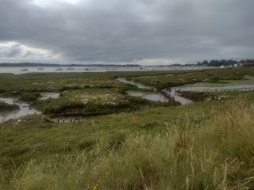 |
| The saltings above Waldringfield |
{kind=link}
Gwen, my oldest granddaughter joined the following day. I was impressed by her initial questions: did we have flares? where were they kept? Was there a VHF set and who was qualified to use it? You might think this implied some lack of faith in our ability to negotiate our very modest river to river passages but I thought they were good questions to ask on arrival on any new boat on which you were planning to put out to sea. She also said she had an inflatable paddleboard in her car. Should she bring it? I looked at my 11-year-old niece Loulou, sailing with my brother Ned on Moondancer and said yes at once.
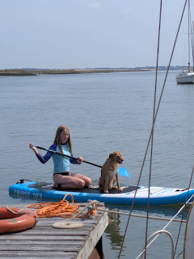 |
| The paddleboard put to good use |
{kind=link}
My son Bertie was also on board with his dogs Nellie and Solo. He’s PD’s regular crew – chief foredeck hand and electronic navigation specialist. Gwen’s a dinghy racer but had also been yacht racing over the winter and has decided views about sail trim. As we sailed gently down the Deben with the wind behind us, they gave their full attention to finding exactly the right configuration of shackles to get the optimal setting for the genoa on the outer forestay. Then, once we were at sea Bertie fired up Tubby the navigation tablet while Gwen explored the handheld VHF and discovered features I’d never dreamed of. The dogs slept and I sailed. It was bliss.
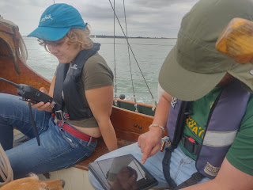 |
| C21st crew members |
{kind=link}
As we entered the Walton channel we took a photo of the Pye End buoy for our friend Janet Harber who’s producing a new edition of East Coast Rivers – the much loved cruising companion first compiled by her father Jack Coote in 1956, 70years ago. The Pye Buoy was a much sought marker long before that – when Maurice Griffiths wrote Magic of the Swatchways (1930) or Arthur Ransome sailed in on NANCY BLACKETT in 1936 before publishing Secret Water in 1939. PETER DUCK herself first passed this buoy in 1947. We anchored, as always, off Stone Point. Ransome aficionados will know this as ‘Flint Island’ but for us it’s always called the Desolate Shores from Mervyn Peake’s poem ‘Sensitive, Seldom and Sad’ (Rhymes without Reason 1944)
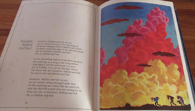 |
In the shambling shades of the shelving shore, We will sing us a song of the Long Before, And light a red fire and warm our paws For it’s chilly, it is, on the Desolate shores, For those who are Sensitive, Seldom, and Sad, For those who are Seldom and Sad. |
{kind=link}
Everyone went ashore joyfully – except me, as I’d appointed myself chief cook for the holiday. I’d learned from all the accounts I’ve read of transatlantic crossings and non-stop circumnavigations and had planned my meals in advance and calculated my stores. This is of course blindingly obvious if you don’t want your cruise to be dictated by the need to visit places with shops but has not been well observed on PD holidays in the past – resulting in some very odd meals indeed. (Perhaps I should gloss over the mid-North Sea occasion when we’d run out of almost everything except some tuna which had been stored so near the engine that it came out of tin already warm, and a batch of out-of-date naan bread where I needed to pretend that the interesting flecks were coriander seeds when I knew perfectly well they were mould spots. Nobody died.)
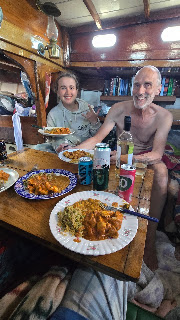 |
| PD cuisine 2026 |
{kind=link}
A long sun-drenched sail with a friendly but slightly inadequate breeze took us to Burnham-on-Crouch by the following evening. Gwen picked up a Mayday relay as we entered the river – it turned out to be the drowning of a mother and daughter off Mersea Island. It was too far away for us to offer any assistance and just one of a series of deaths in the water that have marred this hot, dry summer so far. It’s a long way in to the Crouch but once we reached Burnham Gwen’s sprits rose at the sight of racing keelboats with Kevlar sails swooping in all directions. Mine sank at the complexity of picking up a suitable mooring off the Royal Corinthian YC without impeding any of them.
Ned’s older daughter Ruth joined late that night having
completed a final, final essay for the Master’s course she’s been plugging away
at for more years than I’m at liberty to say. She still had references to add
but city life in sunny Burnham the following day offered too many distractions.
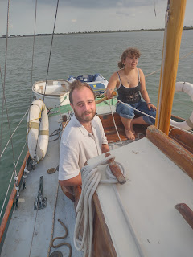 |
| Lazing up the Crouch |
{kind=link}
Late that afternoon we lazed our way up river to find a secluded spot for skimpy swimming and paddle-boarding. Gwen and Bertie were practising their Dutch. I settled myself on the forehatch and enjoyed the scenery. We finally arrived at North Fambridge Yacht Haven in the dark and lay alongside their very convenient pontoon to await family visitors in the morning.
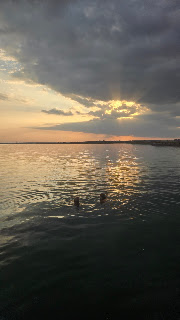 |
| Sunset swimming, River Crouch |
{kind=link}
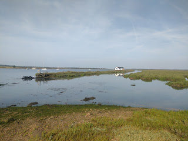 |
| Morning walk North Fambridge |
{kind=link}
Once again we messed about merrily in the morning before moving down river to spend the night in Yokesfleet Creek between Potton Island and Foulness Island off the River Roach. Colonies of seals couldn’t be bothered to raise a flipper as we ghosted past. Bertie had been researching local MOD ammunition testing schedules but was shocked to see a plume of thick black smoke from quite the wrong direction and then the boom of an explosion. This was a fertiliser store blowing up at Rettendon in South Essex. It was a major incident involving 100 firefighters – 3 fire engines and 2 cars destroyed, 20 firemen in hospital but blessedly no-one seriously hurt. Another reminder of the drought and dangers of the land this summer. The seals were taking a bit more care of their offspring when we left the creek in the morning. Some pups were paddling and we saw a parent wading in to tell them they’d gone too far.
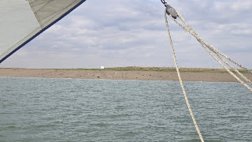 |
| Seals on Potton Island |
{kind=link}
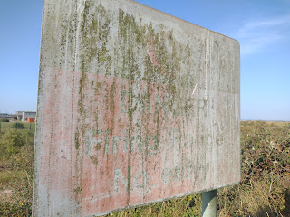 |
| KEEP OUT warning (I think!) on Foulness Island |
{kind=link}
Strong winds had been forecast but (somewhat disappointingly) didn’t materialise early enough to help us significantly as we began journeying homewards via the River Blackwater. It was a hot slow day until fairly late when when we enjoyed an exhilarating beat in from the Bench Head buoy – and PETER DUCK overtook some other yachts. This is a rare occurrence when I’m at the helm and I attribute it entirely to Bertie and Gwen’s excellent genoa setting. We waited a while in the leavings then crept up Woodrolfe Creek in the dark and over the sill into Tollesbury Marina. There we lurked for a day while the strong winds did their worst, Gwen went capsizing and we did our laundry. The day’s delights also included Ruth’s essay references finally complete, some remote working by Bertie to enable him to take a few more days off, galley closure for the cook and the enduring interest of river wall walks and peering at the rich variety of yachts laid up in the saltings. Tollesbury also has a salt water swimming pool which was much appreciated by Loulou and Ruth.
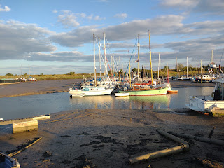 |
| Moondancer and Peter Duck at Tollesbury |
{kind=link}
More swimming and general water fun was available the following day when we anchored off Mersea Stone before spending the night in the Pyefleet. I was interested in the dogs' response to the commemorative soldier silhouette adjacent to the Colchester Oyster Company’s landing place. They found it distinctly frightening and barked fiercely until diverted by the fact that the flood had come in so fast that we were probably going to have to swim out to our anchored dinghy. Solo was keen on the idea and swam out to the dinghy twice to demonstrate what fun this would be. Nellie, who is a thin-skinned whippet, very definitely was not. The tide was still coming in so swiftly that by the time I’d waded out chest deep to the dinghy and towed her back to rescue the quivering hound, one of my shoes which I’d left on the hard was floating away on a voyage of its own.
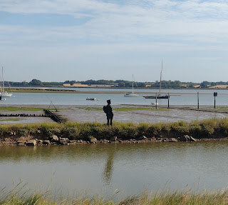 |
| Soldier guarding the oyster hard |
{kind=link}
One final sunny sail took us back to the Deben. Gwen's guitar, Alan, had joined the crew and played us home. It was hard to heave our bags back into the hot car and join the A14 traffic jam.